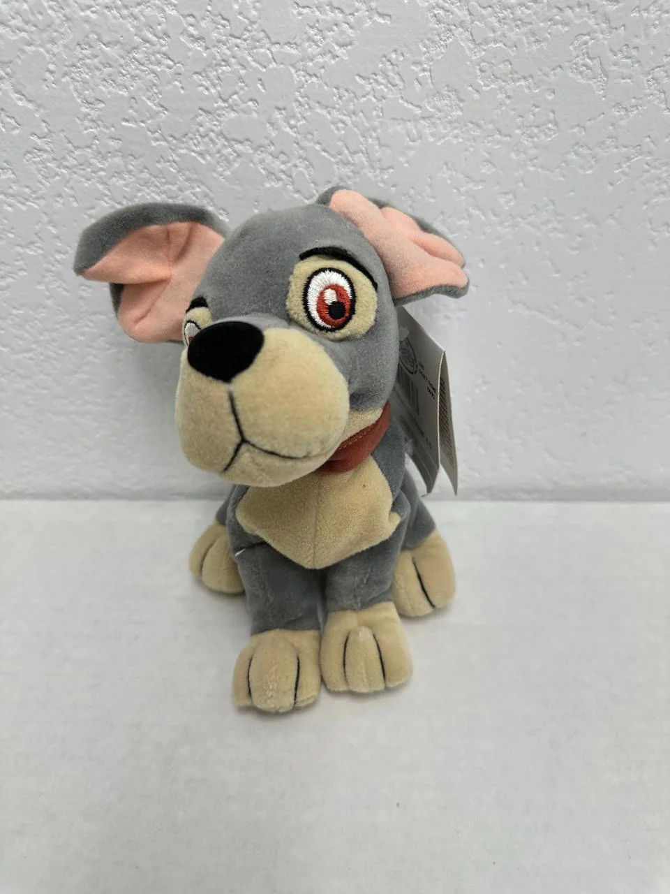
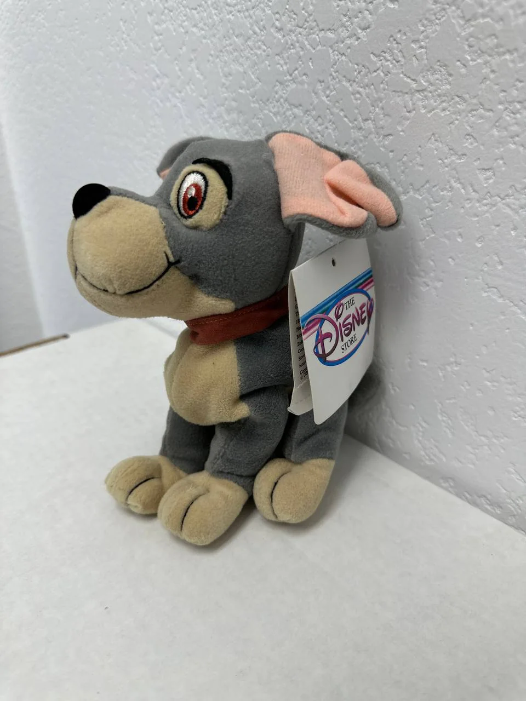
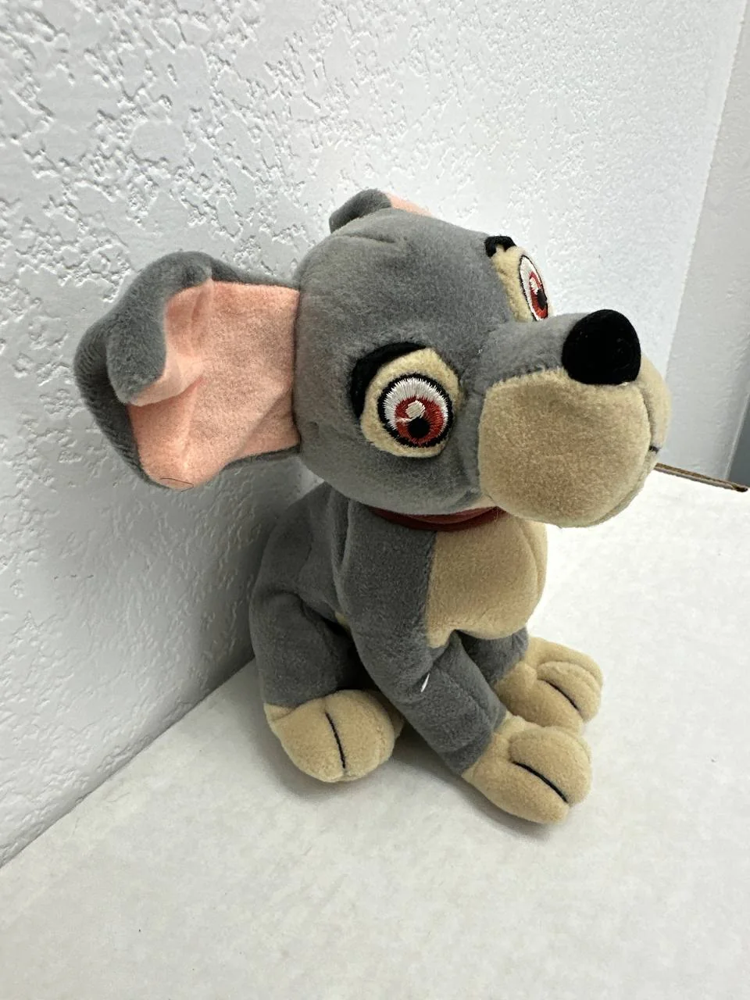

← Back to Cypress Flips



Plushie
Disney Store Scamp Mini Bean Bag Plush - Lady and the Tramp II: Scamp's Adventure
$18.00
Website direct local pickup price — marketplace listings may be higher.
Add a sweet Disney dog collectible to your plush lineup with this Scamp Mini Bean Bag plush from The Disney Store. Scamp briefly appears at the end of the original 1955 Lady and the Tramp and later stars in Lady and the Tramp II: Scamp's Adventure, making him a fun character for Disney fans who like the deeper cuts beyond Mickey, Minnie, and the main princess lineup. This plush features Scamp's gray-and-cream coloring, pink inner ears, embroidered eyes, brown collar, seated pose, and Disney Store tag still attached.
Condition: Good pre-owned/display condition with tag attached. Compared with a mint-condition plush, this Scamp shows light normal handling from storage/display. The plush fabric may have minor fiber wear or light lint, and the tag has some bending from being attached behind the plush. The embroidered eyes, nose, mouth stitching, ears, paws, collar, and Disney Store tag appear intact. No major tears, missing pieces, or heavy staining are visible from the provided photos.
Scamp plushes can vary significantly in value depending on exact release, size, and rarity. Some Disney Store and Lady and the Tramp II Scamp plush listings appear much higher, while smaller mini bean bag versions are generally more approachable. At $20, this is priced as a fair, collectible, and giftable Disney plush with nostalgic character appeal.
Condition: Good pre-owned/display condition with tag attached. Compared with a mint-condition plush, this Scamp shows light normal handling from storage/display. The plush fabric may have minor fiber wear or light lint, and the tag has some bending from being attached behind the plush. The embroidered eyes, nose, mouth stitching, ears, paws, collar, and Disney Store tag appear intact. No major tears, missing pieces, or heavy staining are visible from the provided photos.
Scamp plushes can vary significantly in value depending on exact release, size, and rarity. Some Disney Store and Lady and the Tramp II Scamp plush listings appear much higher, while smaller mini bean bag versions are generally more approachable. At $20, this is priced as a fair, collectible, and giftable Disney plush with nostalgic character appeal.
Local pickup available in Cypress, CA.